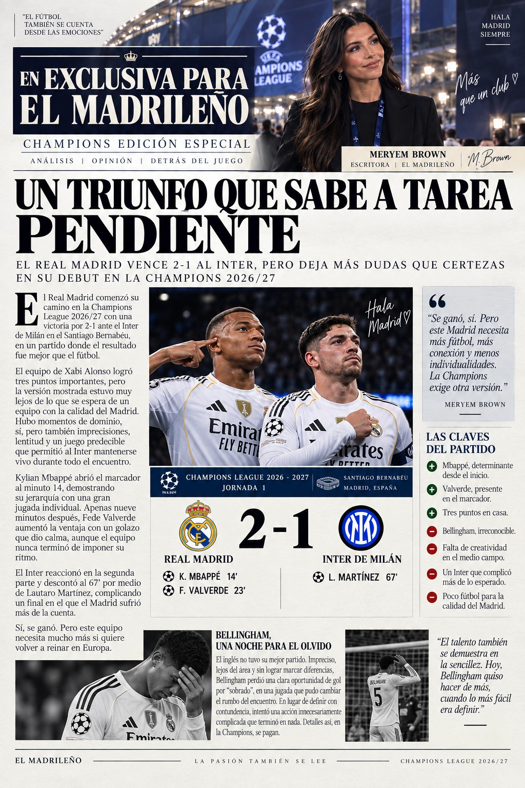

El Real Madrid arranca la Champions con victoria: 2-1 ante el Inter en el Bernabéu.

Real Madrid
El conjunto blanco comienza una nueva aventura europea con la mirada puesta en otra noche histórica en el Bernabéu.
Última hora
La Champions ya está en marcha y Madrid vuelve a ponerse en modo europeo. Todas las noticias, protagonistas y rumores estarán aquí.
Opinión
Un triunfo que sabe a tarea pendiente. El resultado está, pero la temporada apenas comienza.
Más que fútbol
Historias, personajes, vestuario y todo aquello que ocurre alrededor del terreno de juego.